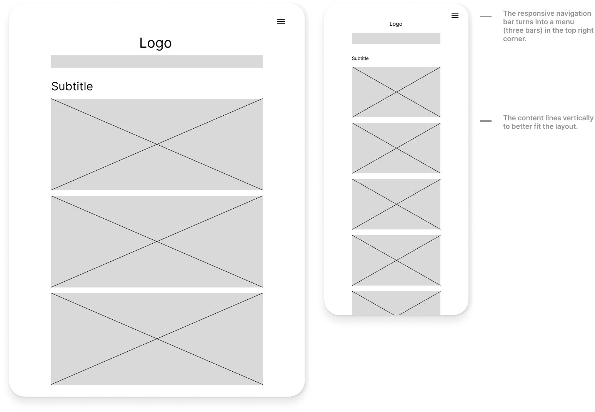

Pre-design Thinking
The intended audience of Yahoo! consists of people who use the internet on a daily basis. People who email,
read the news, follows politics, finance or sports and wants to learn about the weather would be using Yahoo! frequently.
Basically, Yahoo! would target everyone who is be using a search engine.
The users can visit Yahoo! on their laptops, mobile phones or tablets.
Using this information as a jumping-off point, I concluded that:
- The website shouldn't be complex. It should be easy to learn and use every day.
-
The home page should include only the most important information. The user should not be distracted by unnecessary content and be able to
customize their homepage by signing in.
-
The search bar should be centered to draw the user's attention.
Combining Ideas into a Wireframe
I wanted the new design to be simple, intuitive, and easy to use.
Furthermore, I wanted a clean look, which would include less content and information.
Using Figma, I created a total of 3 wireframes of my screen,
one for each of the screen sizes (mobile, tablet, desktop). Below is how the new design would look like for the
desktop.

For the tablet and mobile screens, the responsive navigation bar turns into a menu (three bars). The
content lines up vertically so that it fits the screen better. The one on the right is the low-fidelity wireframe for
tablet screen and the left one is for the mobile screen.
